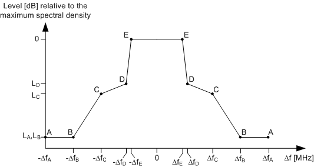
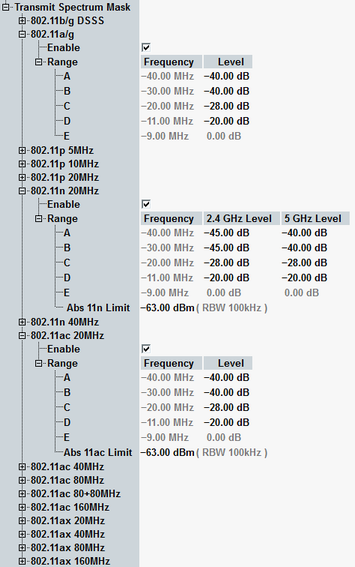

The default masks for OFDM signals are defined via points A,B,C,D,E connected by straight lines. The masks are symmetric relative to the center frequency of the RF analyzer (offset 0 MHz). The points A are at the edges of the frequency range covered by the measurement.

- IEEE 802.11-2012, section 18.3.9.3 for 802.11a,g,p
- IEEE 802.11-2012, section 20.3.20.1 for 802.11n (OFDM HT)
- IEEE 802.11ac 2013, section 22.3.18.1 for 802.11ac (OFDM VHT)
- IEEE 802.11ax 2017, section 28.3.18.1 for 802.11ax (OFDM HE)
Point | Frequency offset (relative to channel BW) | Relative limit
| Relative limit
|
|---|---|---|---|
A | ΔfA = 2 BW | LA = -40 dB | LA = -45 dB |
B | ΔfB = 1.5 BW | LB = -40 dB | LB = -45 dB |
C | ΔfC = BW | LC = -28 dB | LC = -28 dB |
D | ΔfD = 0.5 BW + min {0.05 BW, 1 MHz} | LD = -20 dB | LD = -20 dB |
E | ΔfE = 0.5 BW - min {0.05 BW, 1 MHz} | LE = 0 dB | LE = 0 dB |
Point | Frequency offset in MHz according to channel BW | Relative limit | ||||
|---|---|---|---|---|---|---|
20 MHz | 40 MHz | 80 MHz | 160 MHz | |||
A | ΔfA > | 30 | 60 | 120 | 240 | LA = -40 dB |
B | ΔfB = | 30 | 60 | 120 | 240 | LB = -40 dB |
C | ΔfC = | 20 | 40 | 80 | 160 | LC = -28 dB |
D | ΔfD = | 10.5 | 20.5 | 40.5 | 80.5 | LD = -20 dB |
E | ΔfE = | 9.75 | 19.5 | 39.5 | 79.5 | LE = 0 dB |
In the presence of additional regulatory restrictions, the DUT needs to meet both the regulatory requirements and the mask defined here. Its emissions must be no higher at any frequency offset than the minimum of the values specified in the regulatory and default masks. |
The transmit spectrum masks by regulatory domain for IEEE 802.11p are described in "Transmit Spectrum Mask OFDM, by Regulation".
The spectrum mask offsets at the R&S CMW are the default spectrum mask offsets and the default relative limits are used as preset values. You can configure non-standard power level limits LA, ..., LD though:

LE always equals 0 dB.